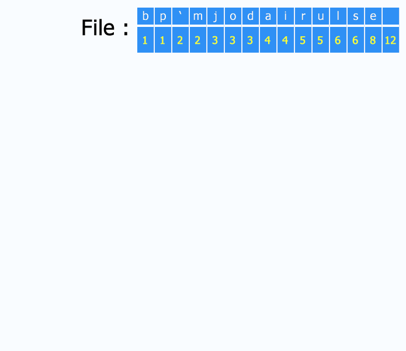
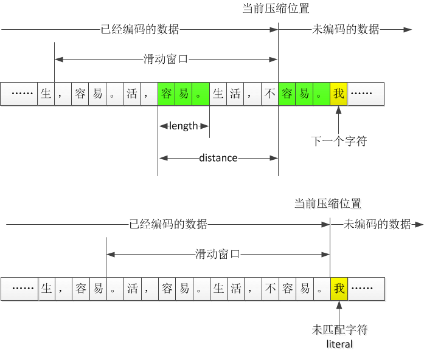
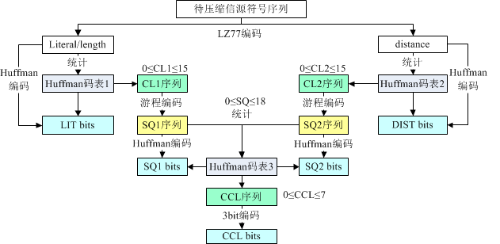
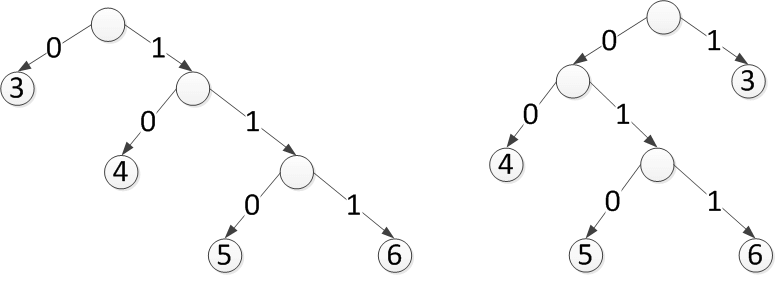
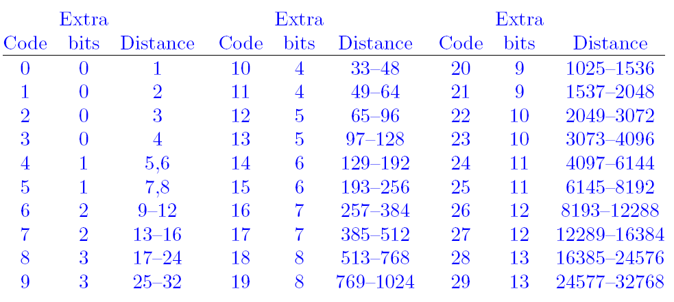
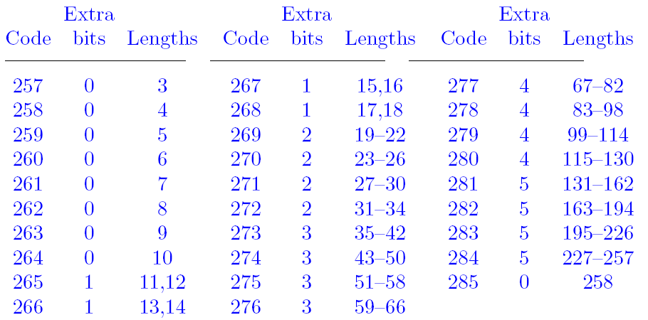
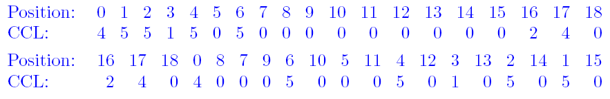
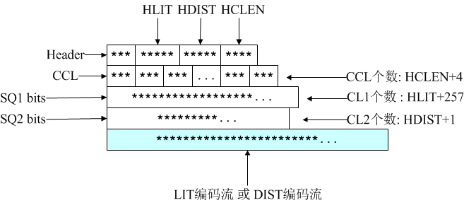

本文从大家耳熟能详的Huffman编码开始谈起，然后讨论文件的压缩。包括如下内容
Huffman编码
- Huffman编码的实现（如何将解压需要用的字典信息写入文件并恢复等）
LZ77算法
ZIP（deflate）算法
Huffman编码
压缩过程
每次将频率最小的两个元素进行合并，自底向上的建树。可以用优先队列来实现。建完树后，我们可以把各个结点与左儿子的边编号为0 ，和右儿子的边编号为1， 将根节点到叶子结点上路径的编号连接起来，就是对应的Huffman编码。
WIKI百科上有一张很好的动态图：

解压
这样就完成了一棵前缀树Trie，前缀的性质也保证了一个码不会是另一个码的前缀，因此Huffman编码能被正确的解压。解压的时候只需要对于当前的bit，若为0，那么走左边，否则走右边。走到叶子结点说明该字符解码完毕，回到根节点，继续解码下一个。
代码实现
首先定义树的结点的内容，并定义了__lt__方法，便于使用堆(python中的heapq)能进行比较元素的大小
1 | class TreeNode(object): |
接下来定义Huffman树，该类支持如下特性
从一个TreeNode的数组（list of TreeNode）中创建huffman树
- 除了一开始用来建树外，在之后从文件中频率信息恢复huffman树也会用到
从huffman树中获取叶子结点对应的编码
- 就是直接进行树的遍历即可
支持查找操作，给定一个字节('1' or '0')进行树根节点的移动
- 文件读取中一个字节一个字节读入时，可以用这个方便查找
1 | class HuffmanTree(object): |
最后时huffman编码的编码和解码过程。
编码过程
为了能够进行解码，要将最后一个字节的实际位数以及“字典”存入文件中
- 首先存入last_byte
- 紧接着存入字典的长度
- 接着对于每一个字符，存入该字符，然后是该字符出现频率v的二进制长度，接着是该频率v（转为二进制，按byte存）
字典存储完毕后，才是进行huffman encode的文件内容
解码过程
- 读入last_byte和字典的长度
- 根据字典的存储格式为： 字符-频率的二进制长度-频率v 进行读取，然后重新构造huffman数
- 对文件内容进行decode，用到上面的HuffmanTree.find方法
- 需要对最后一个字节特殊处理
1 | class Huffman(object): |
最后是文件调用的demo,并最后判断压缩前的文件和压缩后解压的文件是否一致，并算出压缩率。
1 | if __name__ == '__main__': |
huffman code小结
上面的代码实现了huffman文件压缩的编码和解码过程，但是仍有缺陷，比如字符只有1byte并不支持中文和unicode等，此外，这样将字典写入文件的方式是高效的么？主流的压缩如zip是怎么做的？
文件压缩
我们可以看到上文中huffman编码能用来进行文件的压缩。
可以说文件压缩可以分为无损压缩和有损压缩。
有损压缩常见于视频、音频等数据，有损压缩意味着一些信息的损失，压缩后无法还原。如JPEG/MP3等
无损压缩则常用于文件压缩等必须还原的场合，所有的信息都得到保留，典型的有ZIP/PNG等。
下面将简单介绍LZ77算法，然后介绍ZIP算法。
LZ77 算法
Jacob Ziv和Abraham Lempel 两名以色列人在1977年提出，所以该算法称为LZ77。（1978年他们又改进了一下，称为LZ78）
压缩原理
Huffman编码是将出现次数多的编码尽可能的短来进行压缩，而LZ77则是另外一种思路：替换重复的内容。
在一个文件中，如果有内容是相同的话，就可以在后一块内容中做一个标记，标示和前一块的距离和相同的长度（distance,length）。（distance,length）绝大多数情况下小于重复的内容，因此文件的体积就变小了。
滑动窗口
那么，如何寻找重复的串呢？LZ77算法采用的是的滑动窗口的方法，就是只在一个大小固定的滑动窗口内的进行重复查找。
当前处理的字节开始，和滑动窗口中的每个串进行匹配，目标是找到最大的匹配。
- 如果当前处理的字节开始的串有匹配，就输出一个标志，表明下面的是（distance,length）信息，然后输出（distance,length）
- 若没有匹配，则该字符称为未匹配的字符（literal），输出该字节，然后处理下一个字节。

此外，有几点需要注意：
- 当匹配的长度length大于最小匹配长度才认为是一个匹配。因为有的太短，记录（distance,length）对反而增大了文件。
- 固定了窗口大小也就固定了distance和length所需要的位数
- 标准LZ77在找到重复字符串时输出三元组(length, distance, 下一个未匹配的字符)，但是ZIP中的只输出（distance,length）
解压缩的方法
每次先读一个标记为，查看是（distance,length）对还是literal。
- 若（distance,length），则读出相应的串并输出到当前位置
- literal：读出并输出该字节
对比压缩和解压可以发现压缩时需要进行大量的匹配，而解压时工作则少了很多。这和我们日常使用中的压缩慢解压快是一样的。
ZIP算法
zip gzip zlib 关系
下面的内容引用自 How are zlib, gzip and zip related?
.zip is an archive format using, usually, the Deflate compression method. The .gz gzip format is for single files, also using the Deflate compression method. Often gzip is used in combination with tar to make a compressed archive format, .tar.gz. The zlib library provides Deflate compression and decompression code for use by zip, gzip, png (which uses the zlib wrapper on deflate data), and many other applications.
可以看到，Gzip和zip都 了Deflate算法，下面将介绍这个算法。
zip算法流程
ZIP中，首先使用LZ77编码进行压缩，然后之后再对LZ77编码之后的结果继续进行压缩（Huffman编码）,这个算法也叫做Deflate算法。
其实这个算法也支持静态的Huffman编码，无需记录码表，但是压缩率不高，所以大多数都采用动态的Huffman编码。
采用动态的Huffman编码其流程如下：

ZIP中的LZ77
ZIP将LZ77的滑动窗口设置为32KB。虽然设置的窗口越大，越可能有重复的内容出现，但是相应的计算量也会变得很大，可能会得不偿失。
ZIP中只有3个字节以上的重复字符串，才会用（distance,length） 表示。
我们知道，经过LZ77算法之后，文件内容表示为literal、distance + length两种形式。Phil Katz继续对这两种形式进行huffman编码，可以说这过程其实才是ZIP算法的核心。
distance 码表
假如对一个文件进行LZ77压缩后，得到的distance值为：3、6、4、3、4、3、4、3、5，可以根据出现的次数画出哈夫曼树如下：

上面的两个哈夫曼树（这里称为码树）都是合法的，但对应的编码不同。
比如第一个的6的编码为111，而第二棵码树的6的编码为011。
那么问题来了，实际中我们应该怎么选？有好多种情况？
我们知道huffman编码的本质是将出现频率高的编码尽可能的短。对于同一组数据，各种长得不同的huffman树得出的各个元素的长度是一样的，也就是说，我们只需要记录各个元素编码的长度就可以了。
比如上面的第一棵树，我们有：3-->0；4-->10；5-->110；6-->111。我们只需要记录：3->1 ; 4->2; 5->3; 6->3就可以了。
但是这样新的问题来了，在解压的时候，我们可以按照上面第一棵树那样构造huffman树，但是对于5和6来说，长度都是3，那么110表示的是5还是6？
一个简单的解法就是直接按照数字的大小来确定（升序），这样相同的长度下就不会混乱了。
但是还有问题，由于我们滑动窗口的大小为32KB，就是说我们的distance范围为1-32KB就是1-32768。 那么我们怎么知道上面的就是3、4、5、6而不是1、2、3、4或者1-32768任意的四个不重复的数字（升序排列）呢？
可以用一个序列来表示，没有出现的就是0，比如上面的3、4、5、6我们可以如下标记：
- 0、0、1、2、3、3、0、0、0、。。。。。。。。。。。。
考虑当时的硬件条件，如果压缩大文件的时候，distance达到上千是很正常的，计算机计算能力可能不足。Phil Katz将distance划分为多个区间，每个区间当作一个整数来看，这个称为distance code。我们对distance code进行huffman编码，然后再对该去区间的distance进行扩展即可。Phil Katz划分的区间如下：

- code为编号，就是distance code。之后就是用这个进行huffman编码的
- bits为需要在code上扩展几位。最多扩展13位（PS：说明最多的区间有2^13 = 8192个数）
- distance表示这个区间的distance的范围。
虽然使用分区得到的编码不是最优的，但是在当时计算能力不足的情况下，的确能能够大大的加快速度。
此外，衡量一个压缩算法的话，压缩率并不是唯一的指标。我们还应该考虑时空复杂度、稳定性和移植性等等。
literal和length码表
Phil Katz把length的范围做了限制为256，因为一个重复的字符串达到256概率很小，即使超过256，就增加一个distace + length把。这样做可能也和当时硬件条件有关。
Phil Katz这次将literal和length合为一张表（就是一起huffman编码）。literal为0-255，256为结束标志，而257开始的为length。length同distance一样，也进行区间的划分，29个区间如下：

合为一张表的好处就是，解码的时候，先按照这个表来解码，如果是0-255，就表示literal，如果是256，则表示结束，如果是257-285，就是length（也说明后面的是distance）。这样一张表就可以区分出literal或者是length，这样就可以不用加一个标志来区区分。
再次压缩
上面有两次的huffman编码，literal/length码表1以及distace码表2。前面提到过为了能够解码，码表用一个码字长度序列表示，称为CL（Code Length），而记录两个码表的码字长度序列分别记为CL1、CL2。对literal/length的编码比特流称为LIT比特流；对distance的编码比特流称为DIST比特流。按照上面的方法，LZ的编码结果就变成三块：CL1、CL2、LIT比特流或DIST比特流。
由于CL全部都是数字，Phil Katz决定对CL继续编码。这里采用了游程编码。游程的含义为一段连续相同的数，而游程编码就是一段连续相同的数，只记录这个数一次，然后记录出现多少个即可。此外，Phil Katz认为，huffman编码后的码字长度不会超过15（PS: literal/length的编码符号286个，distance的编码符号共30个）。因此Phil Katz 用16、17、18三个额外的数字来表示重复数字（游程）：
| 数字 | bits | 表示的游程 | 表示重复的长度 | 例如 |
|---|---|---|---|---|
| 16 | 2 | 除了0外的 | 3-6 | 11表示重复2+3=5次（游程长从3开始） |
| 17 | 3 | 0 | 3-10 | 111表示后面有连续的3+7=10个0 |
| 18 | 7 | 0 | 11-138 | 0111110表示连续11+62=73个0 |
比如CL序列如下，
4, 4, 4, 4, 4, 3, 3, 3, 6, 6, 6, 6, 6, 6, 6, 6, 6, 6, 0, 0, 0, 0, 0, 0, 2, 2, 2, 2
游程编码的结果为：
- 4, 16, 01（二进制）, 3, 3, 3, 6, 16, 11（二进制）, 16, 00（二进制）, 17,011（二进制）, 2, 16, 00（二进制）
- 也就是4, 16, 1, 3, 3, 3, 6, 16, 3, 16, 0, 17, 3, 2, 16, 0
注意实际中上面标注的二进制应该反过来书写（小端序），比如01其实应该写成10
将CL进行游程编码后，我们又得到了一串0-18的整数，这个整数序列称为SQ（sequence），因为有CL1和CL2，所以我们有SQ1和SQ2。可以容易的统计出SQ中各个整数的出现次数，然后将SQ1和SQ2进行huffman编码，同理，这个码表3也用一个码字长度序列记录，称为CCL，由于最多有18个，Phil Katz认为树的深度至多为7，因此用3bit来记录。
得到CCL后，Phil Katz又继续折腾了一下，进行了置换，其示意图如下：

上面的表示置换前的，下面的表示置换后的，可以看出，16、17、18对应的CCL被放到了前面，这样如果尾部出现一些0，就可以忽略掉（因为我们记录了CCL的长度，补充0即可）
Deflate压缩数据格式
ZIP的格式实际上就是Deflate压缩码流外面套了一层文件相关的信息。Deflate压缩码格式如下：

| 名称 | 长度 | 说明 |
|---|---|---|
| Header | 3bit | 第1个比特如果是1，表示此部分为最后一个压缩数据块；否则表示这是.ZIP文件的某个中间压缩数据块，但后面还有其他数据块。这是ZIP中使用分块压缩的标志之一； 第2、3比特表示3个选择：压缩数据中没有使用Huffman、使用静态Huffman、使用动态Huffman |
| HLIT | 5bit | 记录literal/length码字长度序列（CL1）的个数,CL1个数为HLIT + 257（0-255个literal加上一个256结束的，length长度为变化的） |
| HDIST | 5bit | 记录distance码字长度序列（CL2）的个数，CL2个数为HDIST+1 |
| HCLEN | 4bit | 记录码表3中码字长度序列（CCL）的个数，CCL个数为HCLEN+4 |
| CCL | HCLEN+4 | 用来构造码表3 |
| huffman（SQ1） | CL1经过游程编码缩短后（SQ1），然后对其用huffman编码。解码的时候解码到HLIT +257个即可。用来构造literal/length码表(码表1) | |
| huffman（SQ2） | CL2经过游程编码缩短后（SQ2），然后对其用huffman编码。解码的时候解码到HDIST+1个即可。用来构造distance码表(码表2) | |
| LIT编码流或DIST编码流 | 对倒数第1、2内容块进行解码时，首先利用Huffman码表1进行解码，如果解码所得整数位于0-255之间，表示literal未匹配字符，用Huffman码表1解码；如果位于257-285之间，表示length匹配长度，之后需要利用Huffman码表2进行解码得到distance偏移距离；如果等于256，表示数据块解码结束。 |
小结
本来是想实现一下huffman编码，结果发现要解码的时候码表怎么保存这个问题，以及文件的格式应该怎么样的，自己想出了保存字符+频率重新构建，感觉并不是很好，于是想看看zip等压缩算法是怎么样做的，于是有了这篇blog。
由于我没有进行LZ77编码，所以只和Phil Katz对比 huffman的部分的主要区别。主要区别为：
- Phil Katz存码表的形式为CL，存的是各个字符的码字长度，而我是字符+存出现的次数。。。QAQ
- Phil Katz 还用游标编码对CL进一步进行压缩。。。
参考文献
-
- 本文后面zip算法基本都是参考该文章的内容